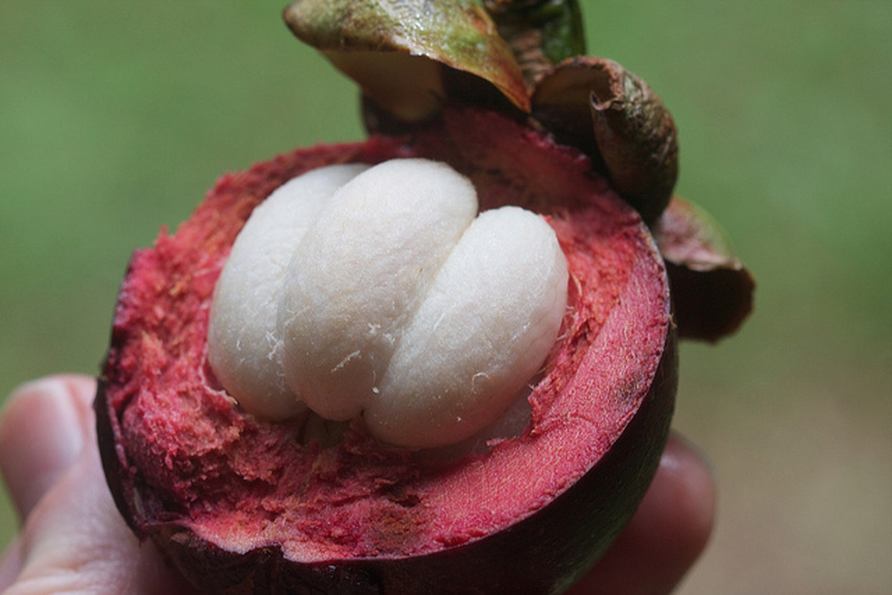
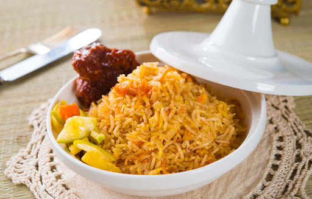
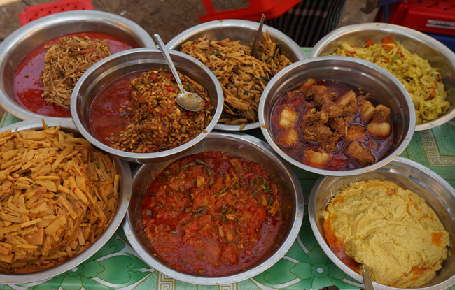

Food in Myanmar
Mangosteen

Sure, mangosteen can be found in many southeast Asian countries. But Myanmar has some of the freshest, largest mangosteen I’ve ever seen. This sweet, creamy fruit is covered in a thick shell that is peeled back to reveal the flesh underneath. It’s a beautiful sight. Other exotic Myanmar fruits you should try are: mango, banana, jackfruit, snakefruit, lychee, pomelo, sugar apple, and rambutan.
Shan Style Rice

Known as fish rice, this Shan dish is among the most typical Myanmar food. It combines rice that's been cooked with turmeric and topped with flakes of freshwater fish and garlic oil. This cuisine becomes a delicious snack when served with leek roots, raw garlic and deep-fried pork rinds. When staying at Sanctum Inle Resort Myanmar you can try this rice.
Curry

The curry is a delicious meal to try with pork, fish, shrimp, beef or mutton. These include rice, a tart salad, a small dish of fried vegetables, a small bowl of soup and a large tray of fresh vegetables and herbs.
1 2